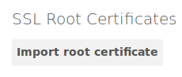
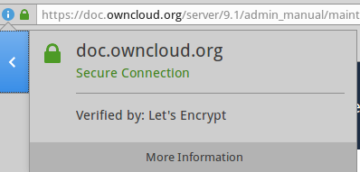
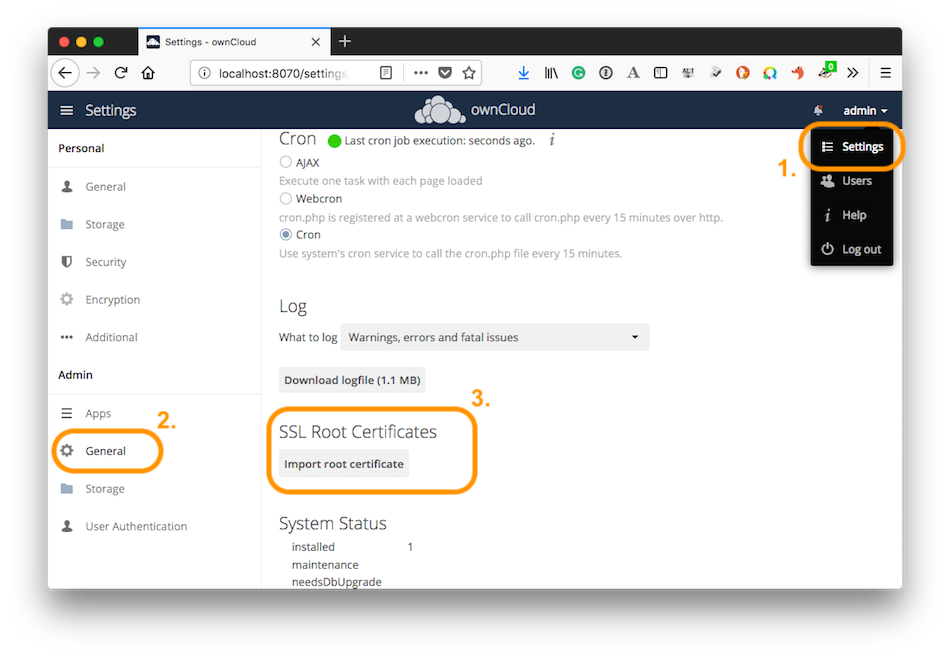

Importing System-wide and Personal SSL Certificates¶
Modern Web browsers try to keep us safe, and so they blast us with scary warnings when sites have the smallest errors in their SSL certificates, or when they use self-signed SSL certificates. ownCloud admins encounter this when creating Federation shares, or setting up external storage mounts. There is no reason against using self-signed certificates on your own networks; they’re fast, free, and easy.
Importing Personal SSL Certificates¶
ownCloud has several methods for importing self-signed certificates so that you don’t have to hassle with Web browser warnings. When you allow your users to create their own external storage mounts or Federation shares, they can import SSL certificates for those shares on their Personal pages.

Click the Import root certificate button to open a file picker. You can distribute copies of your SSL certificates to your users (via an ownCloud share!), or users can download them from their Web browsers. Click on the little padlock icon and click through until you see a View Certificate button, then keep going until you can download it. In Firefox and Chromium there is an Export button for downloading your own copy of a site’s SSL certificate.

Click “More information” in Firefox to import SSL certificate
Site-wide SSL Import¶
The personal imports only work for individual users. You can enable site-wide SSL certificates for all of your users on your ownCloud admin page.
To enable this, you must add this line to your config.php file:
'enable_certificate_management' => true,
Then you’ll have a Import root certificate button on your admin page, just like the one on your personal page. Navigate to it by clicking “admin -> Settings -> (Admin) General” and then scroll almost to the bottom, where you will find the “SSL Root Certificates” section.

Site-wide SSL Root Certificate Import
Using OCC to Import and Manage SSL Certificates¶
The occ command has options for listing and managing your SSL certificates:
security:certificates list trusted certificates
security:certificates:import import trusted certificate
security:certificates:remove remove trusted certificate
See Using occ core commands to learn about how to use occ.